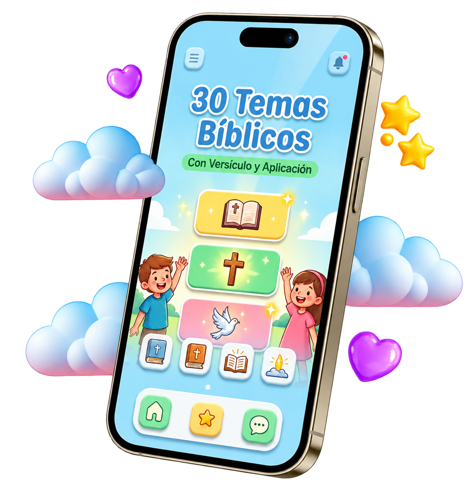
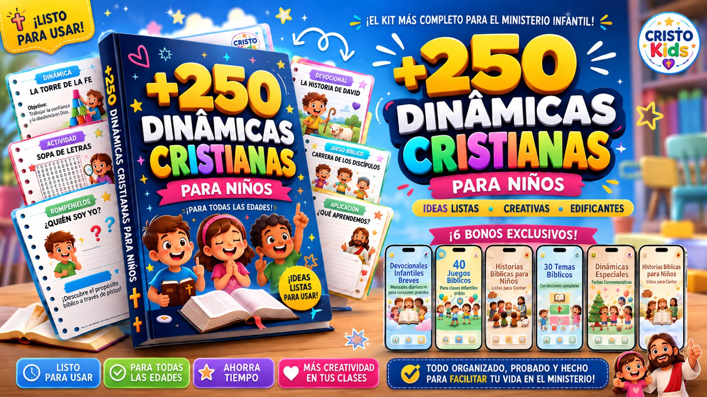

Material completo en PDF
- Más de 250 dinámicas cristianas creadas especialmente para niños
- Organizadas por edad, tema bíblico y tipo de encuentro
- Todo preparado para que solo tengas que elegir la actividad y comenzar
Actividades bíblicas, creativas y fáciles de usar para hacer que tus clases y encuentros con niños sean más dinámicos, participativos y significativos.

🔥 VERSIÓN ACTUALIZADA 2026:
Contenido revisado, ampliado y creado pensando en las necesidades reales del ministerio infantil
MIRA EL MATERIAL POR DENTRO
Estas son solo algunas de las más de 250 dinámicas listas para usar que recibirás para tus clases, cultos y encuentros con niños.
Actividades bíblicas, apropiadas y pensadas para niños, ideales para clases infantiles, Escuela Bíblica Dominical, cultos infantiles y eventos de la iglesia.
Sin actividades complicadas ni preparaciones interminables. Elige la dinámica, revisa los materiales, sigue las instrucciones y comienza.
Las dinámicas ayudan a captar la atención de los niños, estimular su participación y presentar las enseñanzas bíblicas de una forma más sencilla, cercana y memorable.
Ideal para maestras y líderes que tienen una rutina ocupada y aun assim desean servir con dedicación, creatividad y propósito.
VALOR TOTAL DE LOS 6 BONOS: US$40,00 — HOY LOS RECIBES GRATIS
Valor individual: US$6,00 — GRATIS
Valor individual: US$8,00 — GRATIS
Valor individual: US$7,00 — GRATIS

Valor individual: US$6,00 — GRATIS
Valor individual: US$8,00 — GRATIS
Valor individual: US$5,00 — GRATIS
HOY — PAGO ÚNICO
Recibe más del doble de dinámicas y todos los bonos. El 97 % de nuestros clientes eligen el Paquete Premium.

HOY — PAGO ÚNICO
Haz clic en el botón de abajo y
obtén acceso al material completo ahora. ↴
Tienes 30 días completos para conocer y probar el material. Si decides que no es para ti, te devolvemos el 100 % de tu dinero.
Tus datos y la información de pago están protegidos mediante sistemas de seguridad y cifrado.
Una vez aprobado el pago, recibirás acceso inmediato al material.
"El material transformó mis clases de EBD. A los niños les encantan las dinámicas y están mucho más atentos."
"La mejor inversión que he hecho para mi ministerio. Práctico, bíblico y muy fácil de usar."
"¡Las dinámicas son increíbles! Me ayudaron muchísimo a organizar el culto infantil de mi iglesia."
"Material organizado, fácil de entender y perfecto para niños."
Nos apasiona ver a los niños crecer en los caminos del Señor desde una edad temprana.
✨ Más de 12 años sirviendo al ministerio infantil cristiano
✨ Miles de niños alcanzados a través de encuentros, Escuela Bíblica Dominical y clases infantiles
✨ Especialistas en enseñanza bíblica infantil y dinámicas creativas
"Creemos que enseñar a los niños es sembrar semillas eternas. Creamos este material para ayudar a cada maestra, profesora y líder a servir con más amor, creatividad, organización y propósito."
¿Todavía tienes dudas? ¡Estamos aquí para ayudarte!
Después de confirmar el pago, recibirás un correo electrónico con el enlace de acceso. El material estará disponible para descarga inmediata.
El producto es 100 % digital. Podrás acceder desde tu celular, tablet o computadora y también imprimir los archivos que quieras utilizar. No necesitas esperar ningún envío físico.
¡Sí! Todas las dinámicas están explicadas paso a paso y pensadas para una aplicación sencilla, incluso si tienes poco tiempo para preparar tus clases.
Las actividades fueron creadas especialmente para niños y pueden utilizarse o adaptarse a diferentes edades dentro del ministerio infantil.
Tienes 30 días para probar el material. Si dentro de ese período decides que no es para ti, puedes solicitar la devolución y recibirás el 100 % de tu dinero.